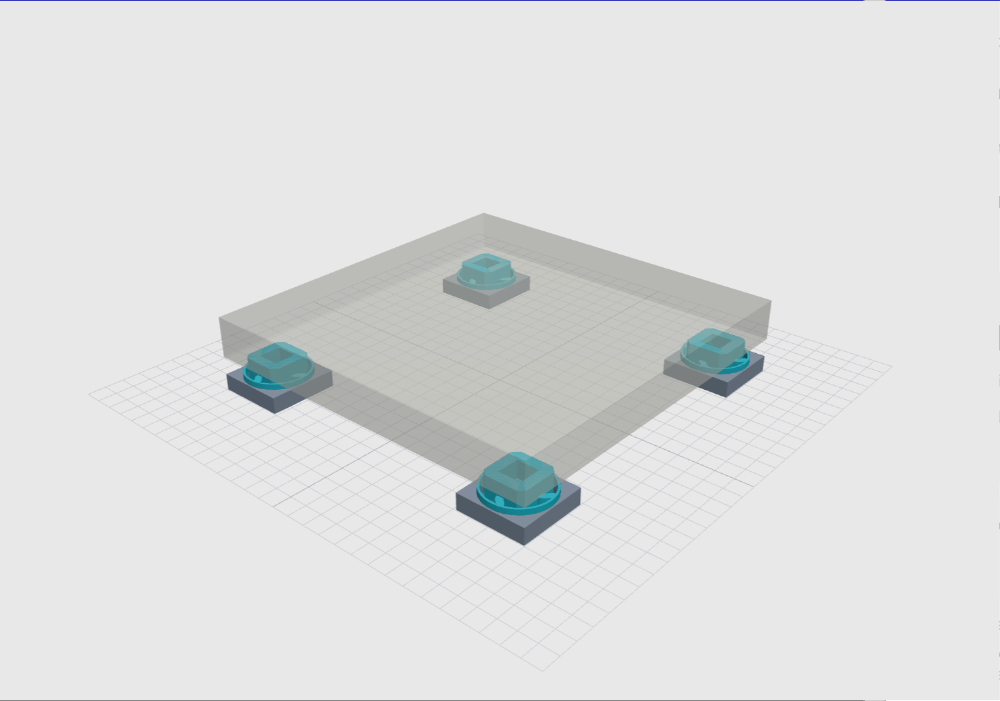
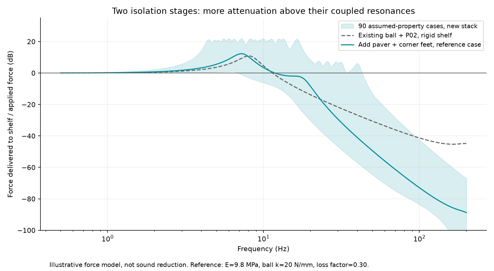
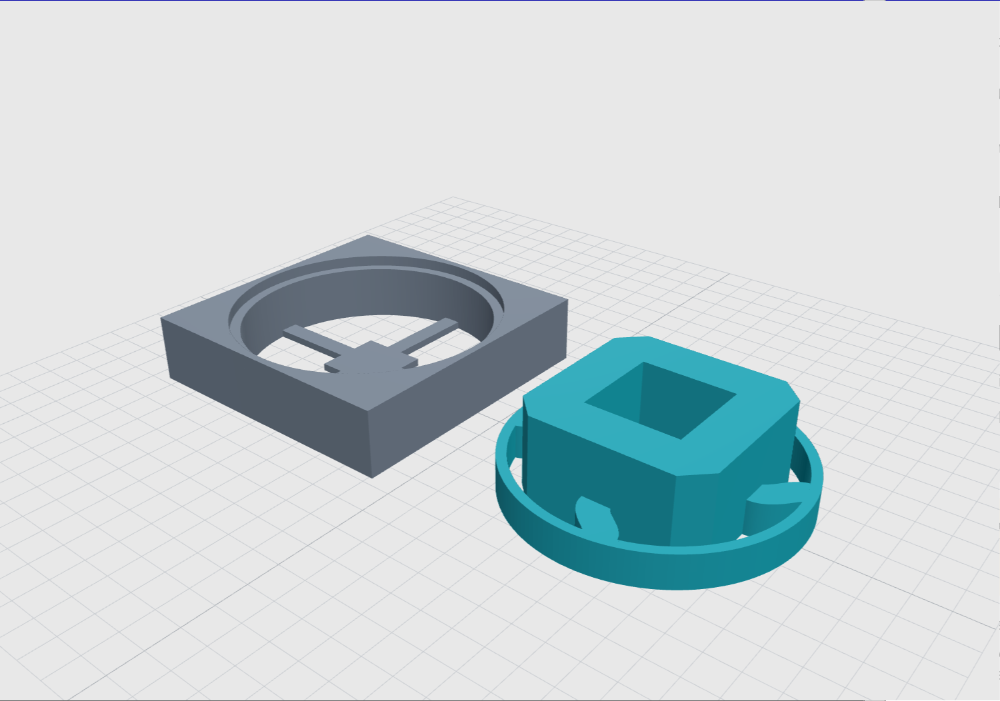

P1S + CONCRETE PAVER · FLAT TPU CORNER FEET
TPU corner feet for a concrete paver.
Four square feet decouple a concrete paver from the shelf. Flat bearing faces, no alignment lips, and enough space for the paver to move without touching the shelf-side frame.
Calculated prototype. Reference load: 29.3 kg for a bare P1S plus a 36 lb paver. The actual TPU and paver are not yet measured. Print and load-test one foot before making all four.
01 / INSPECT THE CORNER FOOT
ACTUAL CAD MESHESLoading model…
Teal: floating pad and flexures. Gray: shelf-side base. The translucent slab is a reference, approximately 399 × 399 × 45 mm. Drag to orbit; scroll or pinch to zoom. Geometry is shown unloaded.
02 / CHECK BOTH VERTICAL GAPS
Estimated initial pad-center sag
— mmLoading calculation…
*After the assumed displacement multiplier, tilt, and a further 0.8 mm compression/fit allowance. These are screening estimates, not measured clearances or a creep prediction.
03 / FLAT, OPEN-ENDED, AND UNDER THE PAVER
The full 3-inch square base can sit inside the paver outline. There are no lips and no thickness-dependent fit. The 48 mm chamfered square top face is flat and surrounds a 24 mm open recess; the concrete bridges that recess. Move the feet slightly inward if needed to avoid an uneven or damaged underside.

Unloaded clearance is 13 mm below the moving pad and 14.2 mm above the outer seating ring. Both matter: if the paver reaches the ring, it creates a direct path around the flexures even if the center stop is still clear.
The lower ring/socket joint is gravity-seated with 0.25 mm radial clearance, not snap-locked. Lift each assembly by the base. Only the upper pad should carry the paver.
04 / COMPLEMENTING THE SQUASH-BALL FEET
COUPLED SYSTEM, NOT ADDED DB CLAIMSThe modeled load path is printer → squash balls → existing P02 cradles → paver → these corner feet → shelf. The paver supplies intermediate mass; the new feet supply another compliant connection. The model solves the coupled system rather than adding two isolation ratings.
In the reference vertical model, the main coupled resonances are about 7.2 and 17.5 Hz. Above those modes the extra stage can substantially reduce shelf force. Some lower-frequency bands get worse, and the upper moving cradle introduces another modeled mode near 209 Hz. None of these frequencies have been measured.
{kind=link}

Reference inputs: 12.95 kg printer, 16.33 kg paver, 9.8 MPa TPU, ball stiffness 20 N/mm per ball and material loss factor 0.30. The sweep uses 5–26 MPa TPU, ball stiffness 5/20/100 N/mm, loss factors 0.10/0.30/0.60 and dynamic/static stiffness ratios 1/2. These are hypothetical material cases. If the upper P02 feet are absent, use the source model's ball-only option; the published curves include P02.
05 / LOAD AND CLEARANCE SCREEN
SOFT-MATERIAL CASE INCLUDEDThe reference paver is a Lowe's 16-inch square concrete stone, listed at 36 lb and actual 15.7-inch sides. Its listed thickness is close to your 45 mm estimate. This is a sizing reference; local stock and the actual stone can differ. Lowe's product specifications.
Reference centered sag is about 1.81 mm at 9.8 MPa. The design screen uses 35 kg total, 30% excess corner load, a 2 mm load offset, and 1.5× assumed displacement drift. The table includes the 0.8 mm compression/fit allowance:
| Modulus | Initial center sag | Stop gap | Paver/ring gap | Linear screen |
|---|---|---|---|---|
| 5 MPa | 5.52 mm | 3.23 mm | 3.19 mm | Pass |
| 7.4 MPa | 3.73 mm | 6.14 mm | 6.50 mm | Pass |
| 9.8 MPa | 2.82 mm | 7.63 mm | 8.19 mm | Pass |
| 15 MPa | 1.84 mm | 9.21 mm | 10.00 mm | Pass |
| 26 MPa | 1.06 mm | 10.48 mm | 11.44 mm | Pass |
The 5 MPa case passes this model with 3.23 mm below the pad and 3.19 mm above the ring. It does not establish a safe load rating. Short, thick flexures and large movements limit linear-beam accuracy. The assumed 5 MPa low end and 1.5× drift factor are not guarantees for an unidentified TPU.
The source screens 252 geometry combinations and selects the softest feasible one within that grid, subject to vertical and radial clearance constraints. Chosen ribs: 7.2 × 8.8 mm section, four matching 12° curves. Beam convergence, independent vertical/3D solver agreement, solid validity and STL connectivity are checked. No nonlinear solid FEA, slicer validation or physical proof test is claimed.
06 / PRINT AND ASSEMBLE

- Print one base and one floating pad first. Suggested geometry settings: 0.4 mm nozzle, 0.2 mm layers, 100% infill and at least four perimeters. Use the filament manufacturer's TPU settings.
- Inspect the sliced ribs and roots for complete fill. Both parts are designed to print without supports.
- Seat the pad's outer ring on the base shoulder. Place the foot under the paver, with no alignment lip or edge capture.
- After testing one foot, print the other three. Four feet require four bases and four pads.
Solid-print material estimate: 109 g per assembled foot, or about 0.43 kg for four, assuming 1.22 g/cm³ TPU. Brim and purge waste are additional.
07 / LOAD-TEST ONE FOOT
- Confirm the actual paver and printer mass. The reference corner load is about 7.32 kg; the design corner load is 11.375 kg equivalent.
- Load one assembled foot through a rigid, flat plate. Keep the weight stable. Record pad displacement and both clearances after 1 minute, 1 hour and 24 hours at service temperature.
- Retain at least 3 mm actual gap at the center stop and above the outer ring after settling. Inspect side clearance, cracks, layer separation and tilt.
- On the full stack, verify that all four feet carry load, the existing printer feet are adequately supported by the paver, and no cables or hardware bypass the suspension.
- Repeat the same printer motion before/after adding the lower stage. Compare shelf vibration spectra, rocking and print quality; recheck the gaps.
The one-foot test is a prototype check, not a lifetime certification. The slab's underside and shelf flatness affect load sharing.
08 / DOWNLOADS
C01 · MILLIMETERSThe bundle includes editable CadQuery dimensions, the beam solver, geometry sweep, coupled vibration model, STEP/STL files, plots and exact dependency versions.
Engineering & print notes · Analysis results · Geometry sweep · Geometry checks · Upper squash-ball feet